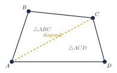
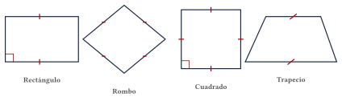
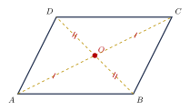
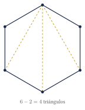
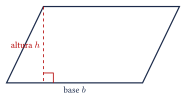
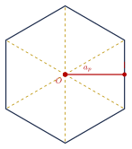

Capítulo 21
Cuadriláteros y polígonos
IPN CENEVAL
Los cuadriláteros y los polígonos aparecen en numerosos problemas de geometría relacionados con ángulos, diagonales, perímetros y áreas. Reconocer sus propiedades permite seleccionar las fórmulas adecuadas y establecer relaciones entre sus lados y ángulos. En este capítulo estudiarás la clasificación de los cuadriláteros, las propiedades de los paralelogramos y las principales fórmulas asociadas con los polígonos regulares.
21.1 Cuadriláteros#
Un cuadrilátero es un polígono formado por cuatro lados, cuatro vértices y cuatro ángulos interiores.
Si sus vértices se nombran consecutivamente como \(A\), \(B\), \(C\) y \(D\), el cuadrilátero se denota mediante:
Sus lados son:
Sus diagonales son los segmentos que unen vértices no consecutivos:
La suma de los ángulos interiores de cualquier cuadrilátero es:
La suma de los ángulos interiores puede justificarse trazando una diagonal. Esta divide el cuadrilátero en dos triángulos, cada uno con una suma angular de \(180^\circ\):
La diagonal \(\overline{AC}\) divide el cuadrilátero en los triángulos \(\triangle ABC\) y \(\triangle ACD\):

21.2 Clasificación de los cuadriláteros#
Los cuadriláteros pueden clasificarse de la siguiente manera:
- Un paralelogramo tiene dos pares de lados opuestos paralelos.
- Un trapecio tiene exactamente un par de lados opuestos paralelos. Estos lados reciben el nombre de bases.
- Un trapezoide no tiene pares de lados opuestos paralelos.
Existen dos convenciones para definir un trapecio:
- la definición exclusiva establece que tiene exactamente un par de lados paralelos;
- la definición inclusiva establece que tiene al menos un par de lados paralelos, por lo que los paralelogramos también serían trapecios.
En esta guía se utilizará la definición exclusiva: un trapecio tiene exactamente un par de lados opuestos paralelos.
Los principales paralelogramos son:
- El rectángulo, cuyos cuatro ángulos interiores son rectos.
- El rombo, cuyos cuatro lados tienen la misma longitud.
- El cuadrado, cuyos cuatro lados tienen la misma longitud y cuyos cuatro ángulos interiores son rectos.
Todo cuadrado es simultáneamente:
- un rectángulo, porque tiene cuatro ángulos rectos;
- un rombo, porque tiene cuatro lados iguales;
- un paralelogramo, porque sus lados opuestos son paralelos.
Sin embargo, no todo rectángulo ni todo rombo es un cuadrado.
Las principales clases de cuadriláteros pueden compararse mediante las siguientes figuras:

21.3 Propiedades de los paralelogramos#
En todo paralelogramo se cumplen las siguientes propiedades:
- Los lados opuestos tienen la misma longitud.
- Los ángulos opuestos tienen la misma medida.
- Los ángulos consecutivos son suplementarios: \[180^\circ.\]
- Las diagonales se bisecan, es decir, se cortan en sus puntos medios.
- Cada diagonal divide el paralelogramo en dos triángulos congruentes.
Estas propiedades pueden representarse en un mismo paralelogramo:

En la figura:
En un paralelogramo, uno de sus ángulos interiores mide \(72^\circ\). Encuentra las medidas de los otros tres ángulos.
Ver solución
El ángulo opuesto tiene la misma medida:
Cada ángulo consecutivo es suplementario del ángulo dado:
Por tanto, las medidas de los cuatro ángulos son:
21.4 Propiedades de rectángulos, rombos y cuadrados#
Las diagonales de un rectángulo:
- tienen la misma longitud;
- se bisecan.
Las diagonales de un rombo:
- son perpendiculares;
- se bisecan;
- bisecan los ángulos interiores del rombo.
Las diagonales de un cuadrado reúnen las propiedades de las diagonales de un rectángulo y de un rombo:
- tienen la misma longitud;
- son perpendiculares;
- se bisecan;
- bisecan los ángulos interiores.
Las diagonales de un paralelogramo siempre se bisecan, pero no necesariamente tienen la misma longitud ni son perpendiculares.
Estas propiedades adicionales dependen del tipo particular de paralelogramo.
21.5 Polígonos#
Un polígono es una figura plana cerrada formada por una sucesión finita de segmentos que se intersecan únicamente en sus extremos consecutivos.
Los segmentos se denominan lados y sus puntos de unión se denominan vértices.
Un polígono es regular si todos sus lados tienen la misma longitud y todos sus ángulos interiores tienen la misma medida.
Si no cumple ambas condiciones, se denomina irregular.
Un polígono es convexo si todos sus ángulos interiores son menores que \(180^\circ\).
Un polígono es cóncavo si al menos uno de sus ángulos interiores es mayor que \(180^\circ\).
Los polígonos reciben los siguientes nombres:
- \(3\) lados: triángulo;
- \(4\) lados: cuadrilátero;
- \(5\) lados: pentágono;
- \(6\) lados: hexágono;
- \(7\) lados: heptágono;
- \(8\) lados: octágono;
- \(9\) lados: eneágono o nonágono;
- \(10\) lados: decágono;
- \(12\) lados: dodecágono.
En general, una figura con \(n\) lados se denomina polígono de \(n\) lados.
21.6 Suma de los ángulos interiores#
La suma de los ángulos interiores de un polígono convexo de \(n\) lados es:
La fórmula se obtiene al seleccionar un vértice y trazar diagonales hacia todos los vértices no adyacentes.
De esta manera, el polígono queda dividido en:
triángulos. Como los ángulos interiores de cada triángulo suman \(180^\circ\), se obtiene:
Por ejemplo, un hexágono puede dividirse en cuatro triángulos:

Encuentra la suma de los ángulos interiores de un hexágono.
Ver solución
Un hexágono tiene:
lados. Aplicamos la fórmula:
La suma de sus ángulos interiores es:
21.7 Ángulos de un polígono regular#
En un polígono regular de \(n\) lados, cada ángulo interior mide:
En un polígono regular de \(n\) lados, cada ángulo exterior mide:
En cada vértice de un polígono regular, el ángulo interior y el ángulo exterior correspondiente son suplementarios:
La suma de un ángulo exterior por cada vértice de cualquier polígono convexo es:
Encuentra la medida de cada ángulo interior de un pentágono regular.
Ver solución
Un pentágono tiene:
lados. Por tanto:
Cada ángulo interior mide:
El ángulo exterior correspondiente mide:
21.8 Diagonales de un polígono#
El número total de diagonales de un polígono de \(n\) lados es:
Desde cada vértice pueden trazarse diagonales hacia:
vértices, pues no puede unirse mediante una diagonal:
- consigo mismo;
- con ninguno de sus dos vértices adyacentes.
Esto produce inicialmente:
segmentos. Sin embargo, cada diagonal se cuenta dos veces, una desde cada extremo. Por eso se divide entre \(2\).
¿Cuántas diagonales tiene un octágono?
Ver solución
Un octágono tiene:
lados. Aplicamos la fórmula:
Un octágono tiene:
diagonales.
21.9 Perímetros de cuadriláteros#
Las fórmulas principales son:
- Rectángulo de base \(b\) y altura \(h\) \[P=2b+2h=2(b+h).\]
- Cuadrado de lado \(l\) \[P=4l.\]
- Rombo de lado \(l\) \[P=4l.\]
- Paralelogramo con lados \(a\) y \(b\) \[P=2(a+b).\]
- Trapecio con lados \(a\), \(b\), \(c\) y \(d\) \[P=a+b+c+d.\]
Encuentra el perímetro de un rectángulo cuyos lados miden \(7\ \text{cm}\) y \(4\ \text{cm}\).
Ver solución
Aplicamos la fórmula:
El perímetro es:
21.10 Áreas de cuadriláteros#
Las áreas de los principales cuadriláteros se calculan mediante:
- Rectángulo \[A=bh.\]
- Cuadrado \[A=l^2.\]
- Paralelogramo \[A=bh.\]
- Rombo \[A=\frac{Dd}{2},\] donde \(D\) y \(d\) son las longitudes de sus diagonales.
- Trapecio \[A=\frac{(B+b)h}{2},\] donde \(B\) y \(b\) son las longitudes de las bases paralelas.
La altura de un paralelogramo o de un trapecio es la distancia perpendicular entre sus bases. No debe confundirse con la longitud de uno de sus lados inclinados.
La base y la altura de un paralelogramo se relacionan de la siguiente manera:

Encuentra el área de un trapecio cuyas bases miden \(12\ \text{cm}\) y \(8\ \text{cm}\) y cuya altura mide \(5\ \text{cm}\).
Ver solución
Aplicamos la fórmula:
El área es:
Encuentra el área de un rombo cuyas diagonales miden \(10\ \text{cm}\) y \(6\ \text{cm}\).
Ver solución
Aplicamos la fórmula:
El área es:
21.11 Perímetro y área de un polígono regular#
Si un polígono regular tiene \(n\) lados y cada lado mide \(l\), su perímetro es:
El apotema de un polígono regular es el segmento perpendicular que une el centro del polígono con el punto medio de uno de sus lados.
Si \(P\) es el perímetro de un polígono regular y \(a_p\) es la longitud de su apotema, entonces su área es:
El centro, el apotema y la división de un polígono regular en triángulos pueden observarse en la siguiente figura:

La fórmula del área se obtiene al dividir el polígono en \(n\) triángulos congruentes.
La suma de las bases de esos triángulos es el perímetro \(P\), mientras que la altura común de cada triángulo es el apotema \(a_p\). Por tanto:
21.12 Ejercicios propuestos#
Encuentra la suma de los ángulos interiores de un octágono.
Ver solución
\(n = 8\). \[S_i = (8 - 2) \cdot 180^\circ = 6 \cdot 180^\circ = 1080^\circ.\]
Encuentra la medida de cada ángulo interior de un hexágono regular.
Ver solución
\(n = 6\). \[\alpha = \frac{(6 - 2) \cdot 180^\circ}{6} = \frac{720^\circ}{6} = 120^\circ.\]
¿Cuántas diagonales tiene un decágono?
Ver solución
\(n = 10\). \[D = \frac{10(10 - 3)}{2} = \frac{10 \cdot 7}{2} = 35.\]
En un paralelogramo, uno de los ángulos interiores mide:
Encuentra las medidas de los otros tres ángulos.
Ver solución
Ángulo opuesto: \(115^\circ\). Ángulos consecutivos: \(180^\circ - 115^\circ = 65^\circ\) cada uno. Los ángulos son \(115^\circ\), \(65^\circ\), \(115^\circ\), \(65^\circ\).
Clasifica un cuadrilátero que tiene cuatro lados iguales y cuatro ángulos rectos.
Ver solución
Cuatro lados iguales y cuatro ángulos rectos: cuadrado.
Clasifica, según la convención utilizada en esta guía, un cuadrilátero que tiene exactamente un par de lados opuestos paralelos.
Ver solución
Un par de lados paralelos y el otro no: trapecio.
Encuentra el área de un trapecio cuyas bases miden:
y cuya altura mide:
Ver solución
Encuentra el área de un rombo cuyas diagonales miden:
Ver solución
Encuentra el perímetro de un cuadrado cuya área es:
Ver solución
\(l^2 = 49\), entonces \(l = 7\) cm. \[P = 4 \cdot 7 = 28 \text{ cm}.\]
Encuentra el número de lados de un polígono regular cuyo ángulo interior mide:
Ver solución
Planteamos: \[\frac{(n - 2) \cdot 180^\circ}{n} = 140^\circ.\] \[180n - 360 = 140n \Longrightarrow 40n = 360 \Longrightarrow n = 9.\] El polígono tiene 9 lados (nonágono).